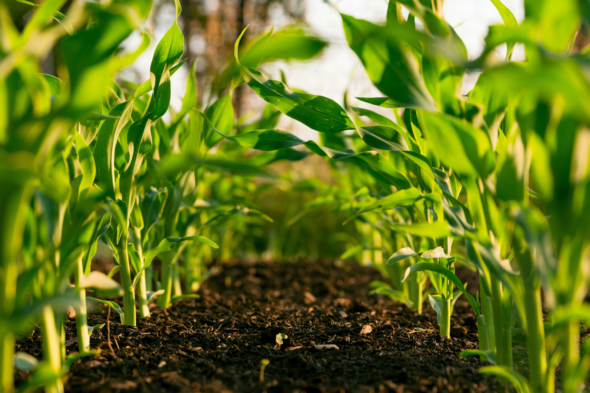
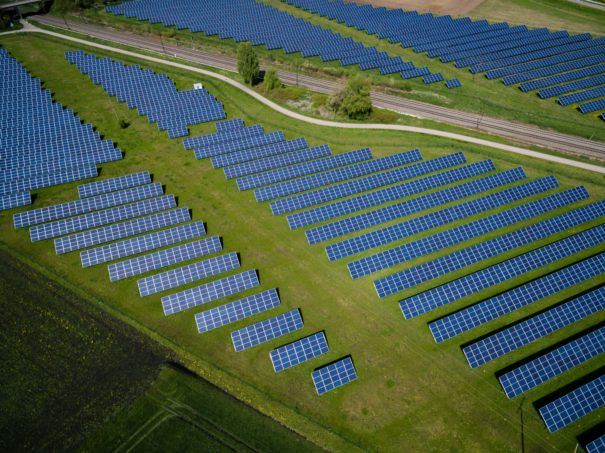
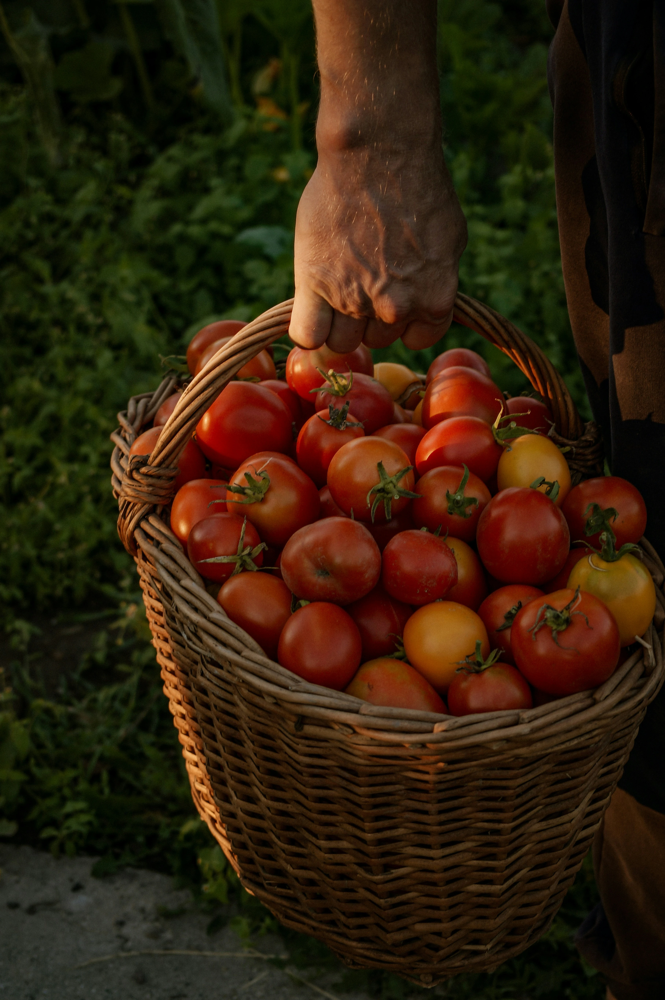
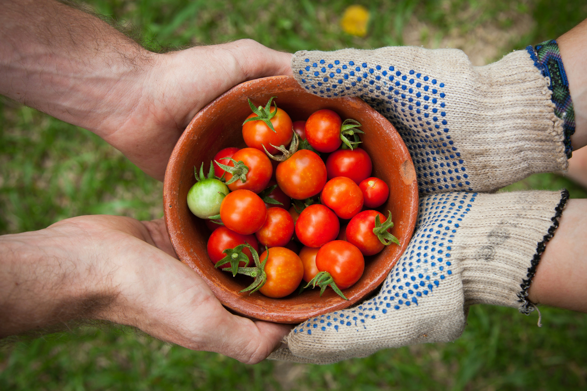

Chi siamo?
Mutti è un’azienda italiana con oltre 120 anni di storia,
specializzata nella trasformazione del pomodoro e riconosciuta a
livello internazionale per la qualità dei suoi prodotti. La crescita
dell’impresa è sempre stata guidata da un forte legame con il
territorio e da una collaborazione costante con gli agricoltori,
considerati partner fondamentali della filiera.
Nel corso degli anni,
Mutti ha sviluppato un modello produttivo che unisce tradizione e
innovazione, puntando su tecnologie moderne, controlli rigorosi e un
approccio orientato alla trasparenza. L’attenzione alla qualità non
riguarda solo il prodotto finale, ma anche il modo in cui viene
coltivato, raccolto e trasformato il pomodoro.
Oggi l’azienda opera in
più di 100 Paesi e continua a investire in progetti che valorizzano il
territorio, migliorano le condizioni della filiera agricola e
promuovono una produzione sempre più responsabile. La sostenibilità
non è un elemento accessorio, ma un principio che guida le scelte
quotidiane e che si riflette nelle iniziative ambientali, sociali e di
governance portate avanti negli ultimi anni.
Le nostre attività sostenibili
La sostenibilità per Mutti non è un progetto isolato, ma un percorso continuo che coinvolge tutta la filiera: dall’uso responsabile delle risorse alla tutela della biodiversità, fino alla riduzione dell’impatto ambientale negli stabilimenti.

Riduzione dell'acqua
La gestione responsabile dell’acqua rappresenta uno dei pilastri della strategia di sostenibilità di Mutti. L’azienda collabora da anni con WWF Italia per monitorare i consumi idrici lungo tutta la filiera e promuovere pratiche agricole più consapevoli. Nel report 2024 viene evidenziato come l’uso di tecniche di irrigazione mirata e sistemi di monitoraggio avanzati abbia permesso di ridurre gli sprechi e migliorare l’efficienza dei processi produttivi. L’acqua viene considerata una risorsa preziosa da tutelare, soprattutto in un settore come quello agricolo, fortemente dipendente dalla sua disponibilità e qualità.

Biodiversità
La tutela della biodiversità è un tema centrale per Mutti, che opera in un settore strettamente legato alla salute degli ecosistemi agricoli. Il report 2024 descrive diversi progetti attivi presso lo stabilimento di Montechiarugolo, finalizzati alla protezione degli insetti impollinatori, al miglioramento della qualità del suolo e alla salvaguardia delle aree naturali circostanti. L’azienda promuove pratiche agronomiche che rispettano i cicli naturali e riducono l’impatto delle coltivazioni sull’ambiente, contribuendo alla conservazione degli habitat e alla resilienza della filiera agricola.

Energia e CO₂
Mutti sta investendo in tecnologie e processi che riducono il consumo energetico degli stabilimenti e migliorano l’impatto ambientale delle attività produttive. L’azienda evidenzia un percorso strutturato verso la diminuzione delle emissioni, l’uso più consapevole delle risorse e l’adozione di soluzioni che permettono di monitorare in modo continuo i consumi. Una parte importante del lavoro riguarda anche la transizione verso fonti più sostenibili e la modernizzazione degli impianti, con l’obiettivo di rendere la produzione sempre più responsabile e in linea con gli standard ESG.

Filiera certificata
Mutti considera la filiera agricola un elemento strategico e investe da anni nella costruzione di rapporti solidi e trasparenti con gli agricoltori. Si evidenziano programmi di formazione, supporto tecnico e strumenti digitali per migliorare la qualità delle coltivazioni e monitorare le performance ambientali delle aziende agricole partner. L’azienda promuove un modello di collaborazione basato sulla condivisione dei dati, sulla tracciabilità e sul miglioramento continuo, garantendo standard elevati lungo tutta la catena del valore e rafforzando la sostenibilità del prodotto finale.
Scarica i report di sostenibilità
Ogni anno viene pubblicato un bilancio trasparente che racconta i risultati ottenuti, gli obiettivi raggiunti e le sfide ancora aperte. Qui puoi consultare i documenti ufficiali che descrivono il loro impegno verso un futuro sempre più responsabile.
